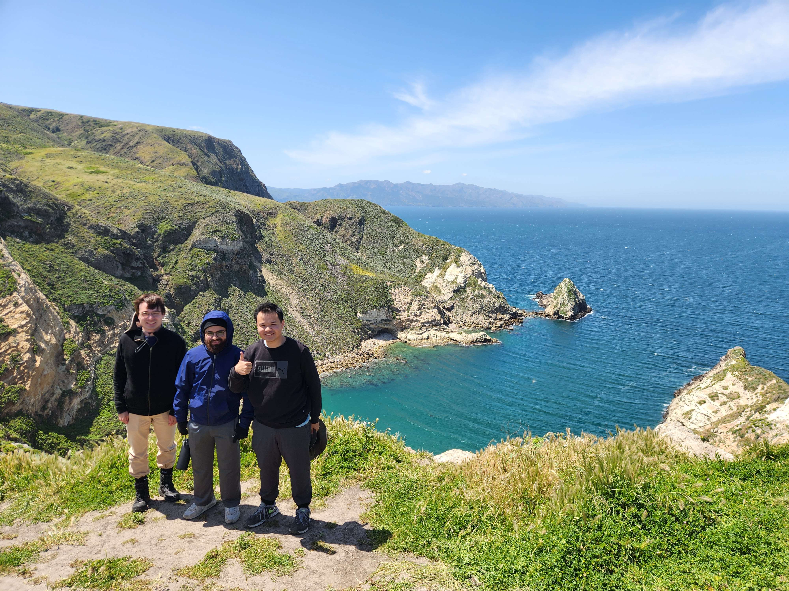
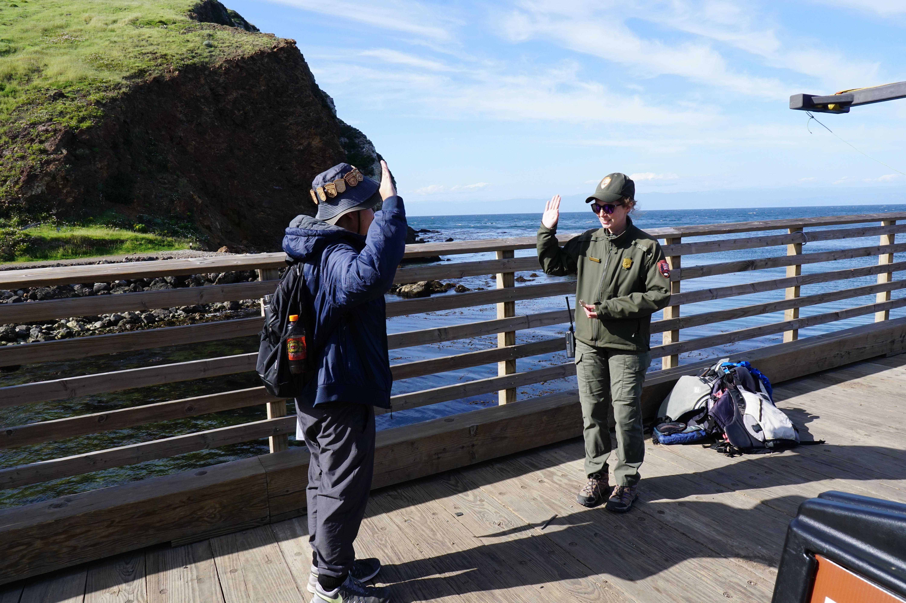
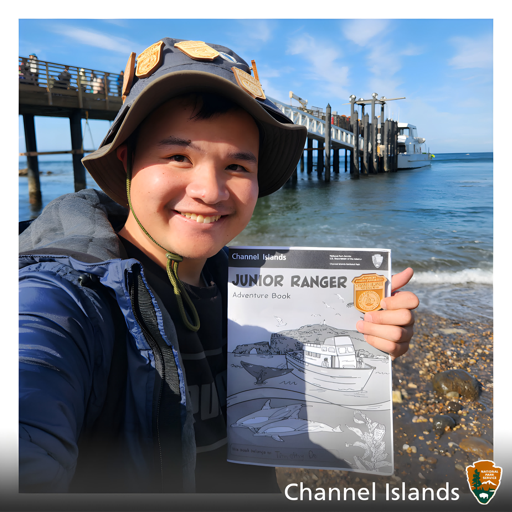

{kind=link}


Give me a one paragraph description of Channel Islands National Park.
Channel Islands National Park, located off the coast of Southern California, is a breathtaking sanctuary encompassing five rugged islands and their surrounding waters. Renowned for their natural beauty and ecological diversity, the park is home to a myriad of unique plant and animal species found nowhere else on Earth. Visitors can explore pristine beaches, towering sea cliffs, and secluded coves, immersing themselves in the serene wilderness of the islands. Whether kayaking through sea caves, hiking scenic trails, or marveling at the abundant marine life while snorkeling or diving, Channel Islands National Park offers unparalleled opportunities for outdoor adventure and conservation appreciation.
Visiting Channel Islands was an experience I would never forget! Waking up at 5:30 AM with my UCLA buddies, we drove to the Beach Buddies dock and arrived at around 6:45 AM. The weather was so sunny and nice, and we were greeted by a nice sunrise! The NPS stamps were inside the office, and they also had the Junior Ranger booklets there. The ferry to Santa Cruz Island was overall awesome! The trip from Ventura to Santa Cruz Island took a litle over an hour. We got to see some jellyfish along the way; they almost looked like bubbles! The crew was very nice and entertaining, guiding us through the usual safety procedures. Riding the waves in the bow of the boat was kind of like an extended roller coaster!
Once we got onto the island, Ranger Kyle went through an orientation on the dos and don'ts on the island. Many species on the island are endangered, so we want to protect them as best we can! The visitor center was nice (also had JR books and stamps), featuring relics from when the Spanish came to explore the island back in the 1800s. Afterwards, we started hiking to Potato Harbor! Overall, the hike was nice, on a very sunny day, and we got to do photography with all the amazing landscapes! We stopped by Cavern Point, which has breathtaking views from the cliff side. Arriving at Potato Harbor, we were greeted by crows gliding with the gusts of wind as a playful activity.
Returning back to Scorpion Cove, we decided rest in the campgrounds before departing back to the mainland. We were able to see some island foxes, very small and red/gray creatures. They are not afraid of us, walking around the benchs we sat at. Before boarding the return ferry, I did my pledge with Ranger Kyle, and she was the nicest ranger! She's very relatable and told us her experiences on Channel Islands, which is a very beautfiul park. Before heading back, we played on the shores of Scorpion cove by skipping rocks, which is a common activity among many visitors! Leaving the island was very memorable, and I definetly would come back and explore more of the islands!
To be Uploaded

